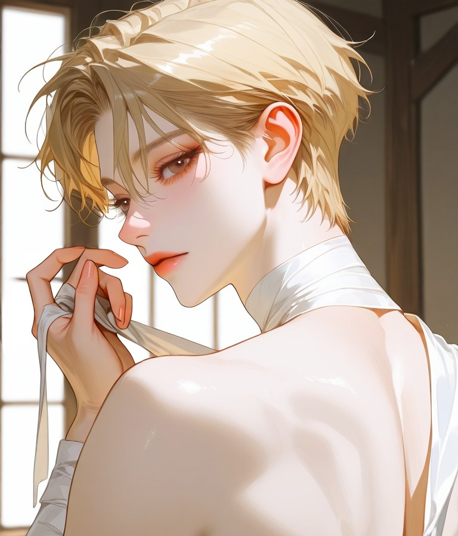
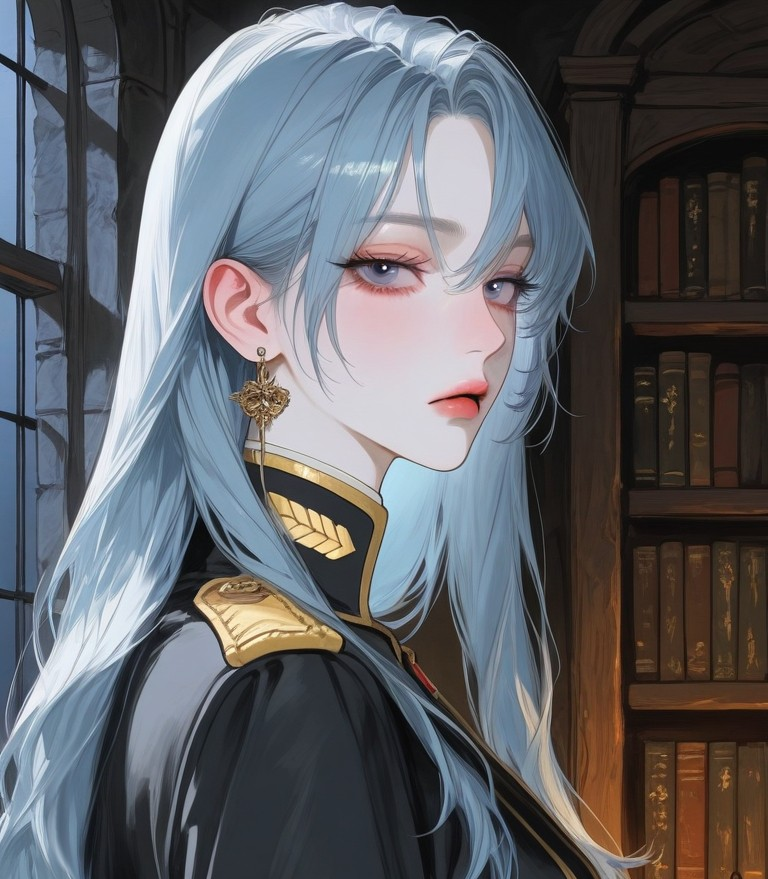
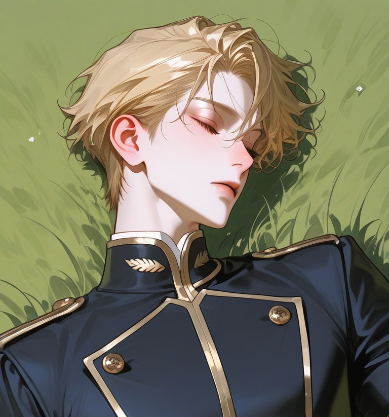
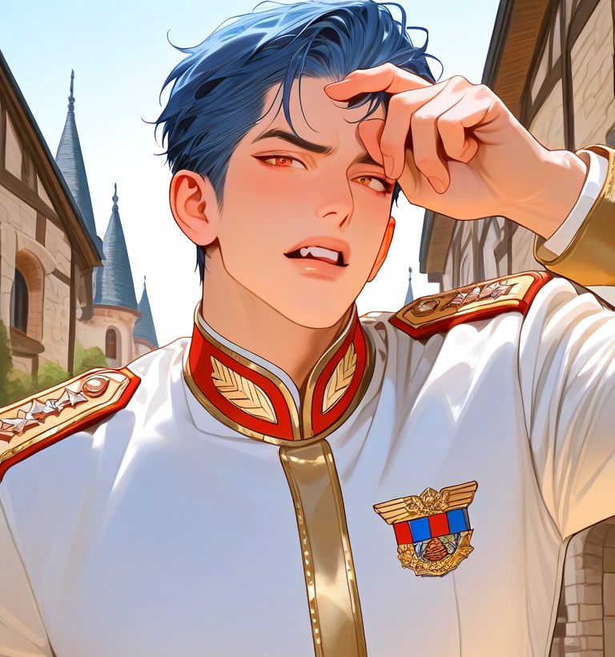
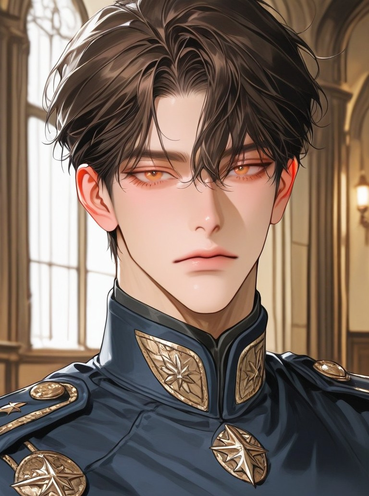
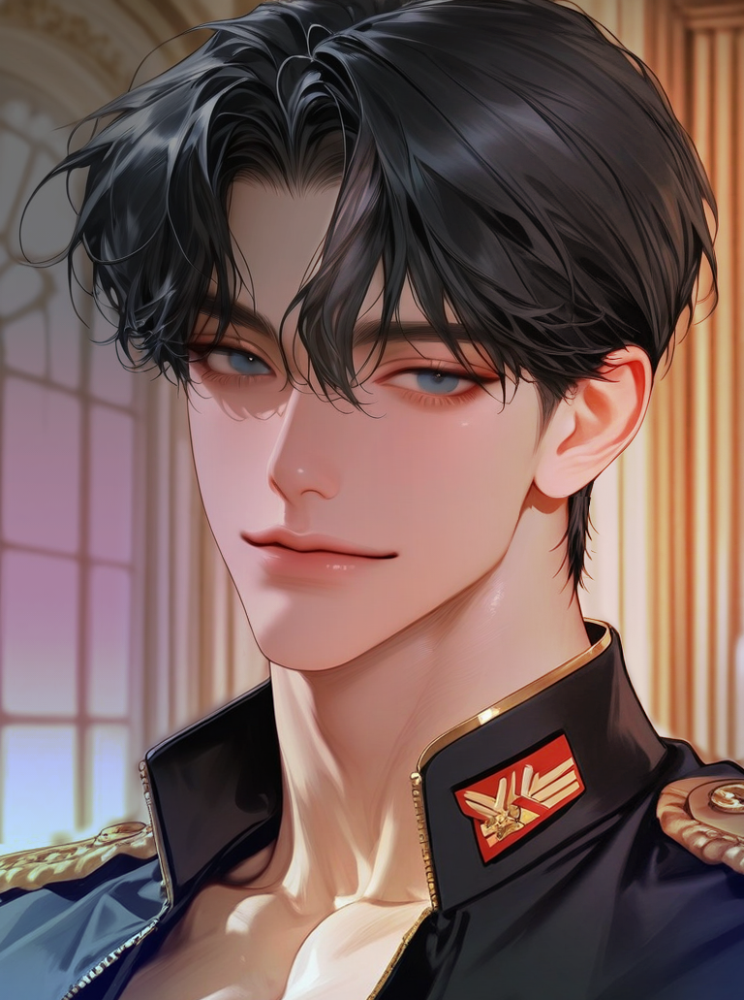
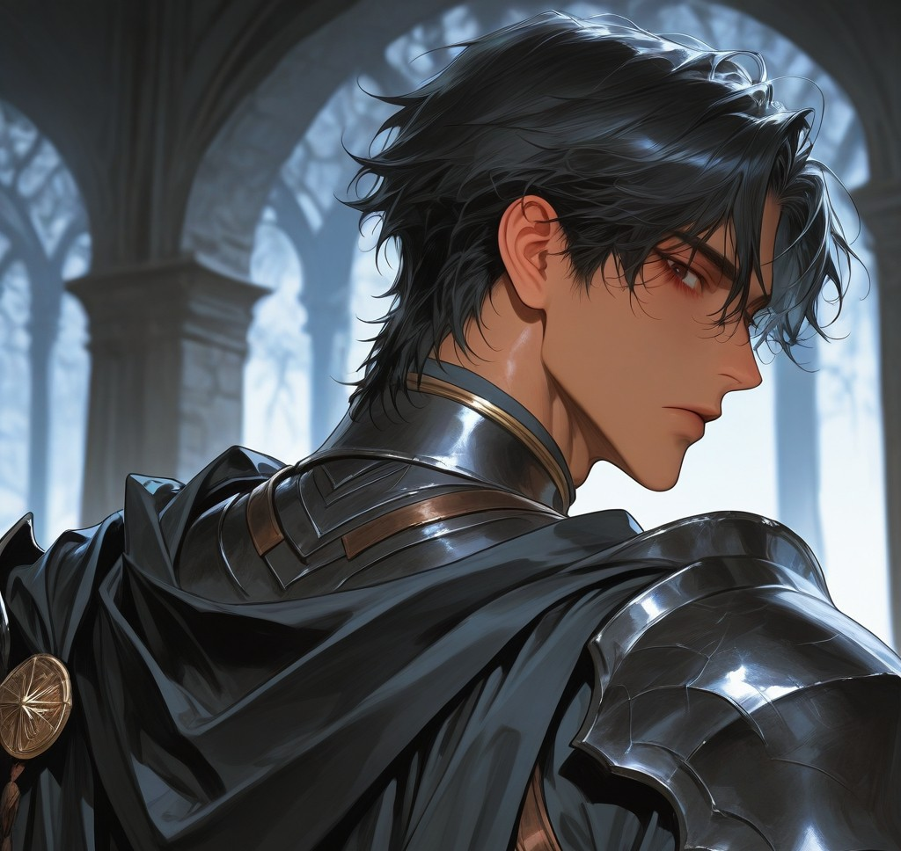
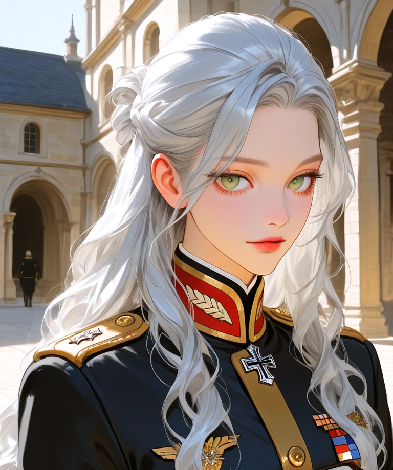
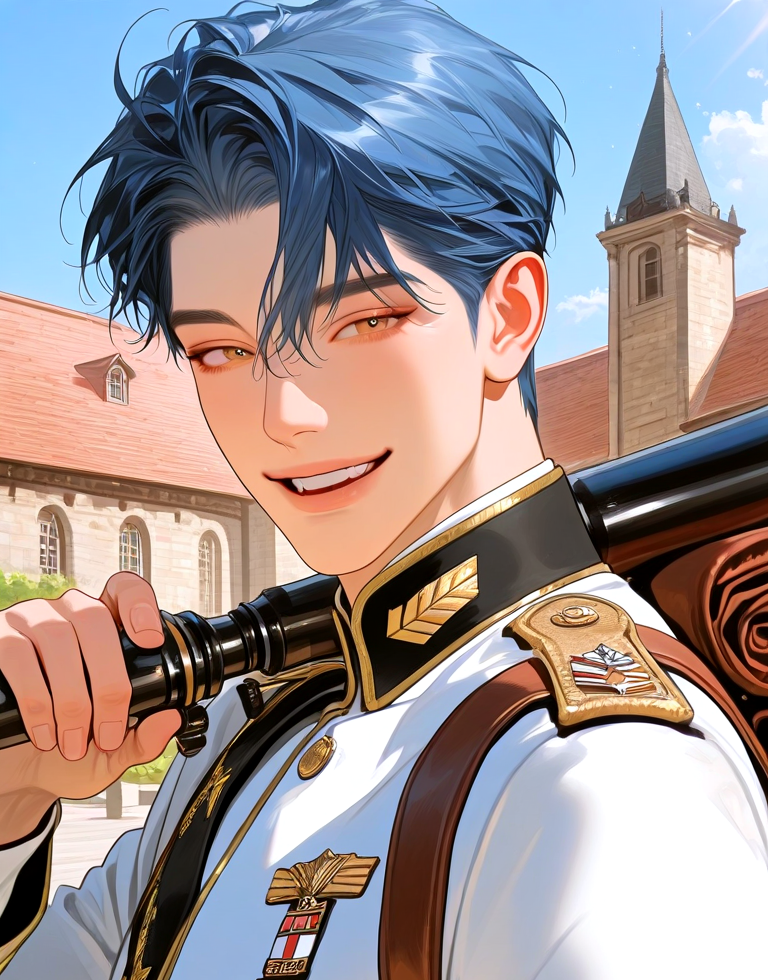

평화와 협력이라는 깃발 아래,
보이지 않는 전쟁이 시작되었다.
"젊은 귀족이여-
여신 에일리아의 이름으로
그대들을 환영하노라"



시간의 흐름 + 활동량에 따라 체력이 감소합니다.
'0'이 되면 기절하므로 음식 섭취와 충분한 휴식으로 잘 관리해 주세요!
(기절 시 돌발 이벤트(납치 혹은 그 이상의 것)가 발생할 수 있습니다.)

시험과 실습을 스킵하면 'C'학점이 적용됩니다.
'F'학점을 받으면 유급되거나 퇴학당할 수 있으니 주의하세요!
능력치를 쌓거나 자유로운 활동을 하실 수 있습니다.
(훈련장, 도서관, 기숙사, 식당, 의무실, 무기고, 정원, 예배당, 시장, 광장)




